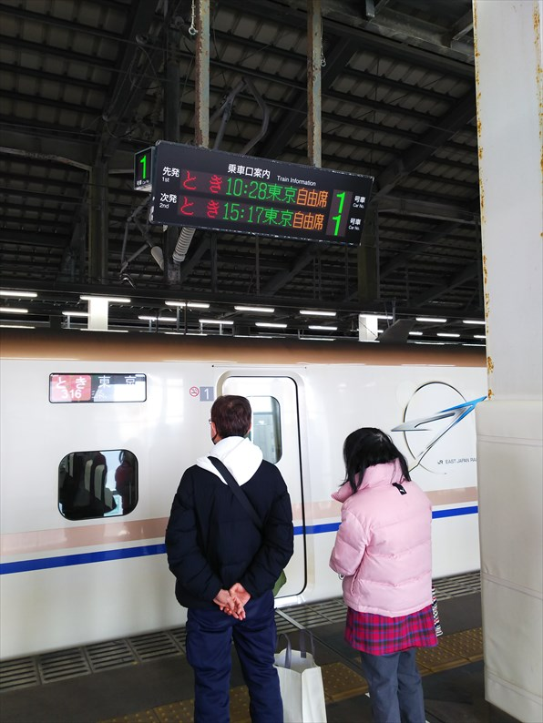
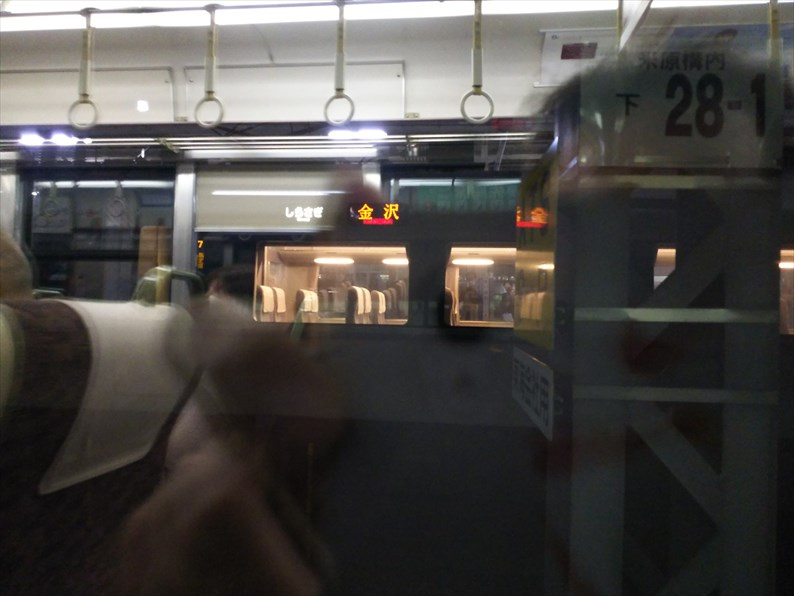

2024（R6） 3月13～15日 新幹線温泉めぐり
「旅せよ平日！ＪＲ東日本たびキュン早割パス」って、ご存じですか？かなりちゃらいネーミングの企画切符なんですが、これがかなり
お得なんすよ。なんせ、ＪＲ東日本エリアに特急の自由席も含めて１日乗り放題で１００００円！
もう鈍行旅もあきあきしてきてるので、久々にＪＲ東の新幹線に乗りまくろうと思います！ただ、全車指定の列車も増えてきた昨今、２回
だけ使える指定席をどこで使うか、が思案のしどころで・・・
夜行バスで早朝の長野駅前に到着。
着いたら海のそばの港町で、めっちゃあせる、とい
う夢を見ました。
先週の乗り過ごしで、バスに対してかなり不信感を
抱いているようです。
大阪から一番近いＪＲ東日本の新幹線駅となると、
ここ長野っすね。
券売機で発券。スマホにＱＲコードを表示させて自動券売機に読み
取らせて発券するという、私にはチャレンジングなやり方で、ほん
まに出発までにちゃんと発券できるか、ドキドキでした。
予約した指定席券もいっしょに無事発券。
さて、ここから長大な旅のスタートです。
新幹線の待合室に飾られてた絵。昔の長野駅っすね。
新幹線ができると、味のある駅舎が取り壊されると
いう悪循環は止まりませんね。
まずは始発の北陸新幹線で北に向かいます。
天気も良く、妙高山が綺麗に見えてます。
上越妙高着。
この駅、ここ３年で３回目。
金沢行の表示が並ぶのも、あとわずか。
福井って、もし恐竜の化石が出んかったら、どうし
てたんやろ。東尋坊、永平寺、そば・・・。地味過
ぎる。化石様様やな。
乗り継ぎ時間がかなりあるので、駅近くのローソン
の飲食コーナーで朝食をいただきます。１年前も来
たので慣れたもんです。
ここからは在来線の特急「しらゆき」で新潟へ向か
います。
残念なことに、ここから直江津まではＪＲでないの
で、別に運賃と特急券が必要です。
柿崎を過ぎて、青海川あたりの海です。なんか穏や
かですね。
昔、大阪発のきたぐにに乗った時は、よくこのあた
りで目覚めた記憶があります
このあたりって、なかなか乗る機会ないので、久々
な感じです。この乗り放題切符でルート考えた時は、
ぜひ乗りたかった区間です。
直江津で１０分遅れ状態でしたが、ほぼ定刻まで回
復して新潟到着。元々新潟の乗り継ぎは時間あった
ので、遅れててもキレてないっすよ。
時間があるので、少し散歩。雪は全くありません。
万代橋まで行こうと思いましたが、思ってたより遠
いので断念。この先のほうが万代橋です。

新潟駅前といえば、この独特のバスターミナル。
雪対応か、屋根がかなり頑丈にできてるように見え
ます。残念ながら、今月末で解体みたいです。

さて、次は上越新幹線です。
早よから停車してるのに、なかなかドアを開けません。寒い中、
客待たせてなんとも思わんのか、ＪＲ東日本！（キレてはないです）
せっかくの上越新幹線やのに、早々に日よけを降ろす客が多く
て閉口。景色楽しむ余裕もないのか、新潟人。
浦佐あたりからようやく雪景色でした。
それと、久々に車内販売を見かけました。もう、懐
かしい、という感情です。
本当は東京まで乗りとおしたかったけど、時間がな
く大宮で下車。
ここから東北新幹線に乗り換えます。
自由席しか使えないので、選択肢はやまびこのみ。
福島に到着。行ってみたかったのがこのあたりやっ
たので、やまびこしか乗れないのは問題なしです。
ディズニーデザインの新幹線で、多くの人がスマホ
を向けてました。
ここからは在来線に乗換えます。
南下して二本松へ。字体がカッコいいですね。
初めて降り立った気がする。
二本松城が有名ですね。
菊も有名だそうです。
ここからバスに乗って、温泉を目指します。
岳温泉に到着。
安達太良山のふもとになります。晴れてたら、この
先に安達太良山が綺麗に見えたはず。
公衆浴場という位置づけではないですが、ほぼそれ
に相当するのがここ「岳ノ湯」です。
白濁の酸性のお湯で湯温も熱め。湯の花だらけのい
い温泉でした。
中はこんな感じ。
来た道戻り、福島へ。
この切符買うには「えきねっと」っちゅうＪＲ東の
会員にならんとアカンのですが、予約した新幹線が
遅れたらその情報がスマホに届く仕組みで、その知
らせが何度か届いて不安になって来ました。
予定通り戻るには目的地をあきらめんとあかんのか
と嫌な考えもよぎります。
ちなみにこれは東京行きの新幹線の連結シーン。み
なさんスマホを向けてます。好きやな～
福島からは貴重な指定席のカードを使った山形新幹
線となります。
「つばさ」って、全車指定なんよね～。
この時点で、山形方面行の新幹線は７分遅れ。まぁ
大丈夫か。
板谷峠越え。ここの車窓は好きです。さすがに雪や。
今回の最終目的地、かみのやま温泉に到着。
昔、東京からの夜行バスで降り立って入った温泉が
めちゃめちゃ気持ち良かったことを覚えてます。
ここは共同浴場がたくさんあるんですが、一番有名
かつまだ行ったことのない下大湯の共同浴場に向か
います。
日暮れ前に到着。ん～いい感じ。
料金も１５０円と格安。
お湯は熱めとぬるめの２つの浴槽があって、ぬるめのお湯を堪能しました。 中はこんな感じ。
山形新幹線で戻ります。心配してた遅延もなく、ひと安心です。
平日の夜やのに、満席とのこと。東日本の新幹線って、人気あるねんな。
大宮には７分遅れで到着。
本日の最終ランナーは、あさまです。
最後の最後で、座れませんでした。すごいな。
熊谷で運よく座れました。高崎ぐらいまで新幹線使う人が多いっすね。
長野に到着。高崎過ぎたら、もう車内はすいてました。
いや～、なかなかの移動距離でした。さすがに疲れました・・・
新潟まで行ったんやから、そのまま会津若松経由で郡山まで出た
ほうが、圧倒的に近いがな・・・
さて、翌日。今日も天気はいいです。
ホテルの近くにあった模型屋。鉄道模型も扱ってる
ようで、開店前で寄れずで残念！
ホテルから歩いて長野電鉄の市役所前駅にやってきました。
当初は長野から夜行バスで帰ろうかと思ってたんで
すが、ホテル代＋青春１８代と変わらないので、泊
まって長野の温泉を堪能することに。
しらける、元東急車両がやってきました。
須坂に到着。
本社もある、長野電鉄で一番大きい駅です。
改札前では、採れたて野菜や果物を売ってます。
鉄道グッズもよーさん売ってました。
ここからバスで温泉に向かいます。
雪をかぶった山並みが綺麗に見えます。
一度来てみたかった山田温泉に到着。
これがお目当ての共同浴場です。
な、なにぃ～！！
休業やないかーおらァー！！
土産物屋さんに聞いたら、この大湯だけではなく、
ポンプかなんか、設備の不具合とかで、山田温泉全
体が温泉を汲み上げられずに全面休業とのこと。
もう、最悪・・・
しょうがないので、バスの運ちゃんが勧めてくれた
途中の温泉へ。
もちろん、悪くはない温泉ですが、歴史のある山田
温泉の大湯とは比ぶべくもなく・・・
失意の中、須坂まで戻ってきました。
この駅、車庫も併設してるので、ホームからいろん
な車両が見えて面白いです。
すでに引退した、マッコウクジラこと元営団の車両
が停まってます。
鉄道設備も飾られてます。
昔は、直進して松代を経由して屋代まで行く路線が
あったのに・・・
長野に戻ります。
じゃじゃーん！元小田急のロマンスカーです。
運よく、最前列をゲットできました。
やっぱり最後尾より最前列がいいっすよね。
ちなみに、この特急の列車名は「ゆけむり」。傷口
に塩を塗り付けられたような名前です。
長野駅に到着。
ブルーリボンマーク付きの車両でした。
このあと、天井が開いて運転手が出てきてビックリ
しました。
さすがにくたびれた感もある車体でしたが、末永く
活躍してほしいものです。
さて、早々に帰路につきます。
松本でちょっと寄り道。
松本電鉄で新村駅にやって来ました。
ここが松本電鉄の車庫のある駅です。
思ってたより小さいっす。
駅舎は建て替えられてしまってました。残念！
おっ、デキがいますね。ええ形してます。
これ以上は敷地内になるので、さすがの私も入れま
せん。
これ、昔の木造の貨車やね。すごいもんが残っとる。
あとは素直に鈍行で帰るだけ。

名古屋できしめん食べました。トッピングつける気
満々やったのに、揚げ物が全部売り切れで残念でし
た。
そうです、今日はダイヤ改正前夜です。名古屋の駅
で金沢行の表示が出るのも今日限り。
米原まで戻ってきました。
ちょうど隣でしらさぎに増結してるところに遭遇し
ました。この風景も今日までかな？

葬式鉄的な連中がようさん乗ってました。